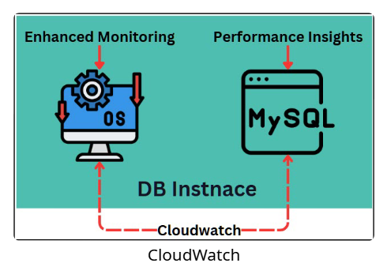

|
 |
 |
| Performance Insights | Enhanced Monitoring | CloudWatch Monitoring |
|---|---|---|
| Database engine performance | Operating system (OS) metrics | Overall RDS instance monitoring |
| Detailed (in-depth query and wait statistics) | Detailed (1-second intervals) | Basic (5-min) and Detailed (1-min) |
| DB load, query performance | CPU, RAM, disk I/O | CPU, memory, storage, I/O, logs |
| N/A | N/A | Supports logs (error, audit) |
| N/A | N/A | Custom alarms & automated responses |
| Analyze slow queries & bottlenecks in high-traffic DBs | Real-time OS metrics for critical workloads | Trend tracking & resource monitoring every 1–5 min |
| Free first 7 days/month, then paid | Paid — based on instance size | Free (5-min), paid (1-min), logs, custom metrics |